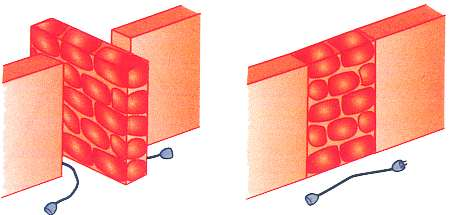

להפיק גרפים זה קל, כל ילדה יכולה לעשות זאת ולמעשה עושה כשהיא מציירת דמות גפרורים:
להפיק גרפים זה קל, כל ילדה יכולה לעשות זאת ולמעשה עושה כשהיא מציירת דמות גפרורים:
אך כפי שניתן לראות, הקשר שנוצר אינו מרהיב במיוחד.

נשאלת השאלה איך לעצב קשרים נעימים למראה. הדרך הקלה ביותר למתחילים היא להסתמך על סריגים. יש הרבה סריגים, או באופן כללי, ריצופים (Tesselation). קיים אתר נפלא המוקדש לנושא מרתק זה. המוכרים ביותר הם הסריג הריבועי, המשולש והמשושה. אני לא אציג בפניכם את הסריג הריבועי, כולם מכירים אותו. אני מניח שאתם יכולים לצייר סריג משולש, ואז לצייר גם סריג משושה על ידי מחיקת חצי מהקצוות של סריג משולש. הם קשורים בצורה עמוקה יותר מכיוון שהסריג הכפול (הדואלי) של סריג משושה הוא סריג משולש. נלמד את המושג המתמטי הזה בהמשך ונראה שהוא שימושי.

אבל האמת היא שאם יש לכם רק סריגים, תוכלו ליצור רק צמות משעממות כמו זו:

יש צורך לשבש את זה קצת כדי לקבל משהו יפה. כדי לעשות זאת, יש למנוע מכמה מעברים להתרחש.
| ניתן לעשות זאת בשתי דרכים: |
 |
הופך ל... |
|
|
או |
 |
כעת יש ברשותכם שלושה סוגי קשתות, הרגילים שבהם מתקיימים הצמתים ושתי הצורות החדשות שבהן החוטים לא מצטלבים אלא חוזרים חזרה.


קודדו את המידע הזה לגרף שלכם, על ידי חיתוך הקשת של דרך הראשונה למניעת המעבר ועל ידי עיבויה עבור הדרך השנייה. למעשה, כדי להשלים את התמונה, צריך גם את אופן הצומת האחר, שמתקבל על ידי היפוך החוטים מעל ומתחת; נקודד את הקצה הרביעי הזה בקו מקווקו.
על פי צורת החשיבה של המבוך, הקירות האלה חוסמים את הדלת, בין אם על ידי פיצולה לשניים או סגירתה באופן מוחלט:


הדרך הקלה ביותר היא להתחיל עם סולמות של ריבועים או משולשים, עם כמה קירות הממוקמים בהרמוניה. התרגיל הבא אינו אמור להיראות יפה כפי שהוא, אלא לתת לכם דפוסים, באורך של שתיים או שלוש חזרות, שתוכל למקם לאורך סולם. שימו לב שחלק מהקצוות יהיו עבים יותר מאחרים! הקפידו להבדיל ביניהם.

אתם יכולים להעיף מבט בפתרונות או לעבור לנושא הבא: יצירת גרפים.